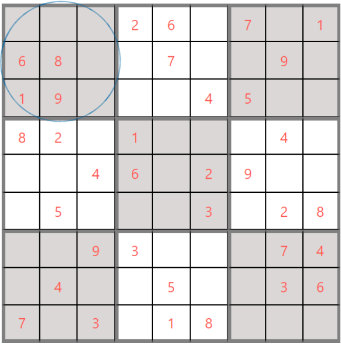
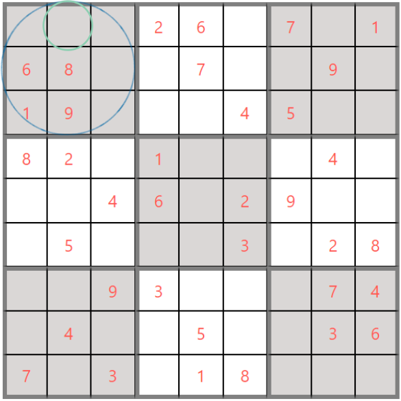

Rule No.1 Use numbers from 1 to 9
Sudoku is played on a grid of 9 x 9 spaces. Each row, column and square (9 spaces each) needs to be
filled out with the numbers 1-9, without repeating any numbers within the row, column or square.
Rule No.2 Not to repeat any numbers
As you can see, in the upper left square (circled in blue), this square already has 4 out of the 9
spaces filled in. The only numbers missing from the square are 2,3,4,5 and 7. By seeing which numbers
are
missing from each square, row, or column, we can use process of elimination and deductive reasoning to
decide which numbers need to go in each blank space.

Rule No.3 Sudoku doesn't requires guessing
Sudoku is a game of logic and reasoning, so you shouldn’t have to guess. If you don’t know what number
to put in a certain space, keep scanning the other areas of the grid until you seen an opportunity to
place a number. But don’t try to “force” anything – Sudoku rewards patience, insights, and recognition
of patterns, not blind luck or guessing.
Rule No.4 Use process of elimination
In this Sudoku grid (shown below), in the upper left square (circled in blue),it is missing only a few
numbers: 2,3,4,5 and 7.
One way to figure out which numbers can go in each space is to use “process of elimination” by checking
to see which other numbers are already included within each square,since there can be no duplication of
numbers 1-9 within each square (or row or column).

In this case, we can quickly notice that there are already number 7s and 2s in the first row and
first
column of the Sudoku grid. This means that we are left with 3,4 and 5 to be filled in the
top-left
square.
Now,observing the second column of the upper left square, we can't place 4 or 5,as it is already
present
in the entire column. Thus, we are left with 3 only to be filled at that position(circled in
green).
This is how the process of
elimination works in Sudoku – you find out which spaces are available, which numbers are missing
– and
then deduce, based on the position of those numbers within the grid, which numbers fit into each
space.
End of Rules